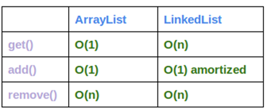

ArrayList 、LinkedList和Vector比较¶
List回顾¶
序列（List），有序的Collection，正如它的名字一样，是一个有序的元素列表。确切的讲，列表通常允许满足 e1.equals(e2) 的元素对 e1 和 e2，并且如果列表本身允许 null 元素的话，通常它们允许多个 null 元素。实现List的有：ArrayList、LinkedList、Vector、Stack等。值得一提的是，Vector在JDK1.1的时候就有了，而List在JDK1.2的时候出现，待会我们会聊到ArrayList和Vector的区别。
ArrayList vs. Vector¶
ArrayList是一个可调整大小的数组实现的序列。随着元素增加，其大小会动态的增加。此类在Iterator或ListIterator迭代中，调用容器自身的remove和add方法进行修改，会抛出ConcurrentModificationException并发修改异常。
注意，此实现不是同步的。如果多个线程同时访问一个 ArrayList 实例，而其中至少一个线程从结构上修改了列表，那么它必须 保持外部同步。 （结构上的修改是指任何添加或删除一个或多个元素的操作，或者显式调整底层数组的大小；仅仅设置元素的值不是结构上的修改。）这一般通过对自然封装该列表的对象进行同步操作来完成。如果不存在这样的对象，则应该使用 Collections.synchronizedList 方法将该列表“包装”起来。这最好在创建时完成，以防止意外对列表进行不同步的访问：
List list = Collections.synchronizedList(new ArrayList(…));
下面演示下相关ArrayList例子。
ArrayList基本方法代码：
@SuppressWarnings({ "rawtypes", "unchecked" })
public static void listMethods()
{
List a1 = new ArrayList<String>();
a1.add("List01");
a1.add("List03");
a1.add("List04");
System.out.print("原来集合：\n\t"+a1+"\n");
a1.add(1,"List02");
System.out.print("指定角标1插入：\n\t"+a1+"\n");
a1.remove(2);
System.out.print("指定角标2删除：\n\t"+a1+"\n");
System.out.print("指定角标2查询：\n\t"+a1.get(2)+"\n");
Iterator i1 = a1.iterator();
System.out.println("用迭代器查询全部元素：");
while (i1.hasNext())
{
System.out.print(i1.next()+",");
}
}
原来集合：
[List01, List03, List04]
指定角标1插入：
[List01, List02, List03, List04]
指定角标2删除：
[List01, List02, List04]
指定角标2查询：
List04
用迭代器查询全部元素：
List01,List02,List04
在上面我们可以根据角标来增加(add)、删除(remove)、获取(get)列表里面元素。ArrayList提供了Iterator迭代器来遍历序列。值得注意的是，迭代器的就相当于一个指针指向角标，next()方法就相当于指针往后移一位。所以切记，用迭代器中一次循环用一次next()。
下面演示下在ConcurrentModificationException的出现，及处理方案。泥瓦匠用Iterator演示这个异常的出现：
public static void iteratorTest()
{
List a1 = new ArrayList<String>();
a1.add("List01");
a1.add("List02");
a1.add("List04");
a1.add("List05");
Iterator i1 = a1.iterator();
while (i1.hasNext())
{
Object obj = i1.next();
if (obj.equals("List02"))
a1.add("List03");
}
System.out.print("集合：\n\t"+a1+"\n");
}
怎么解决的，先看清楚这个问题。问题描述很清楚，在创建迭代器之后，除非通过迭代器自身的 remove 或 add 方法从结构上对列表进行修改，否则在任何时间以任何方式对列表进行修改，迭代器都会抛出 ConcurrentModificationException。
因此我们应该这样修改代码，用ListIterator迭代器提供方法，：
@SuppressWarnings({ "unchecked", "rawtypes" })
public static void listIterator()
{
List a1 = new ArrayList<String>();
a1.add("List01");
a1.add("List");
a1.add("List03");
a1.add("List04");
ListIterator l1 = a1.listIterator();
while (l1.hasNext())
{
Object obj = l1.next();
if (obj.equals("List"))
{
l1.remove();
l1.add("List02");
}
}
System.out.print("集合：\n\t"+a1+"\n");
}
运行下，我们可以看到：
集合：
[List01, List02, List03, List04]
这样，我们成功解决了这个并发修改异常。把其中‘List’元素删除，新增了一个‘List02’的元素。
Vector 非常类似ArrayList。早在JDK1.1的时候就出现了，以前没有所谓的List接口，现在此类被改进为实现List接口。但与新的Collection不同的是，Vector是同步的。泥瓦匠想说的是Vector，在像查询的性能上会比ArrayList开销大。下面演示下Vector的基本例子：
@SuppressWarnings({ "unchecked", "rawtypes" })
public static void vectorMethods()
{
Vector v1 = new Vector<String>();
v1.add("Vector001");
v1.add("Vector002");
v1.add("Vector003");
v1.add("Vector004");
v1.add("Vector005");
Enumeration e1 =v1.elements();
while (e1.hasMoreElements())
{
Object object = e1.nextElement();
System.out.println(object);
}
}
从方法上看几乎没差别，同样注意的是：此接口的功能与 Iterator 接口的功能是重复的。此外，Iterator 接口添加了一个可选的移除操作，并使用较短的方法名。新的实现应该优先考虑使用 Iterator 接口而不是 Enumeration 接口。
LinkedList及其与ArrayList性能比¶
LinkedList与ArrayList一样实现List接口，LinkedList是List接口链表的实现。基于链表实现的方式使得LinkedList在插入和删除时更优于ArrayList，而随机访问则比ArrayList逊色些。LinkedList实现所有可选的列表操作，并允许所有的元素包括null。除了实现 List 接口外，LinkedList 类还为在列表的开头及结尾 get、remove 和 insert 元素提供了统一的命名方法。这些操作允许将链接列表用作堆栈、队列或双端队列。
LinkedList和ArrayList的方法时间复杂度总结如下图所示。
表中，添加add()指添加元素的方法，remove()是指除去（int index）角标。ArrayList具有O（N）的任意指数时间复杂度的添加/删除，但O（1）的操作列表的末尾。链表的O（n）的任意指数时间复杂度的添加/删除，但O（1）操作端/列表的开始。
用代码验证下这个结论：
public static void testPerBtwnArlAndLkl(){
ArrayList<Integer> arrayList = new ArrayList<Integer>();
LinkedList<Integer> linkedList = new LinkedList<Integer>();
// ArrayList add
long startTime = System.nanoTime();
long endTime;
long duration;
for (int i = 0; i < 100000; i++) {
arrayList.add(i);
}
endTime = System.nanoTime();
duration = endTime - startTime;
System.out.println("ArrayList add: " + duration);
// LinkedList add
startTime = System.nanoTime();
for (int i = 0; i < 100000; i++) {
linkedList.add(i);
}
endTime = System.nanoTime();
duration = endTime - startTime;
System.out.println("LinkedList add: " + duration);
// ArrayList get
startTime = System.nanoTime();
for (int i = 0; i < 10000; i++) {
arrayList.get(i);
}
endTime = System.nanoTime();
duration = endTime - startTime;
System.out.println("ArrayList get: " + duration);
// LinkedList get
startTime = System.nanoTime();
for (int i = 0; i < 10000; i++) {
linkedList.get(i);
}
endTime = System.nanoTime();
duration = endTime - startTime;
System.out.println("LinkedList get: " + duration);
// ArrayList remove
startTime = System.nanoTime();
for (int i = 9999; i >=0; i--) {
arrayList.remove(i);
}
endTime = System.nanoTime();
duration = endTime - startTime;
System.out.println("ArrayList remove: " + duration);
// LinkedList remove
startTime = System.nanoTime();
for (int i = 9999; i >=0; i--) {
linkedList.remove(i);
}
endTime = System.nanoTime();
duration = endTime - startTime;
System.out.println("LinkedList remove: " + duration);
}
控制台输出如下：
ArrayList add: 16904776
LinkedList add: 12015418
ArrayList get: 1304593
LinkedList get: 108950741
ArrayList remove: 787388127
LinkedList remove: 128145950
对比下的话，其性能差距很明显。LinkedList在添加和删除中性能快，但在获取中性能差。从复杂度和测试结果，我们应该懂得平时在添加或者删除操作频繁的地方，选择LinkedList时考虑：
1、没有大量的元素的随机访问
2、添加/删除操作
自然我下面用LinedList实现一个数据结构–栈。
package com.sedion.bysocket.collection;
import java.util.LinkedList;
/**
* 用LinkedList实现栈
* 队列和栈区别：队列先进先出，栈先进后出。
*/
public class Stack<T>
{
private LinkedList<T> storage = new LinkedList<T>();
/** 入栈 */
public void push(T v)
{
storage.addFirst(v);
}
/** 出栈，但不删除 */
public T peek()
{
return storage.getFirst();
}
/** 出栈，删除 */
public T pop()
{
return storage.removeFirst();
}
/** 栈是否为空 */
public boolean empty()
{
return storage.isEmpty();
}
/** 输出栈元素 */
public String toString()
{
return storage.toString();
}
public static void main(String[] args)
{
Stack stack=new Stack<String>();
stack.push("a");
stack.push("b");
stack.push("c");
System.out.println(stack.toString());
Object obj=stack.peek();
System.out.println(obj+"--"+stack.toString());
obj=stack.pop();
System.out.println(obj+"--"+stack.toString());
System.out.println(stack.empty());
}
}
总结
Vector和ArrayList
1、vector是线程同步的，所以它也是线程安全的，而arraylist是线程异步的，是不安全的。
2、记住并发修改异常 java.util.ConcurrentModificationException ，优先考虑ArrayList，除非你在使用多线程所需。
Aarraylist和Linkedlist
1、对于随机访问get和set，ArrayList觉得优于LinkedList，LinkedList要移动指针。
2、于新增和删除操作add和remove，LinedList比较占优势，ArrayList要移动数据。
3、
- 单条数据插入或删除，大部分情况下，ArrayList的速度反而优于LinkedList。“
- 大部分情况下，数组长度N不会很长很长那种，那么插入的时候，最多移动的点是N/2。大部分情况下这个值(a) 肯定很小。但是LinkedList（element，next，previous ）三个结构组成，在单个插入的是或new一个LinkedList（相当于new了三个对象），然后element赋值，next赋值，previous赋值，造成消耗时间就大了。
- 但随机批量，量多了效率明显不一样了。数组,(a)增生很大，LinkedList却依然乘个倍数而已。